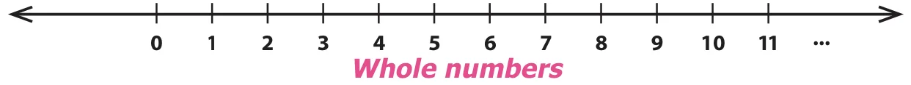
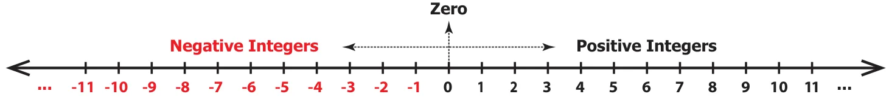
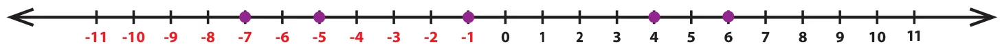
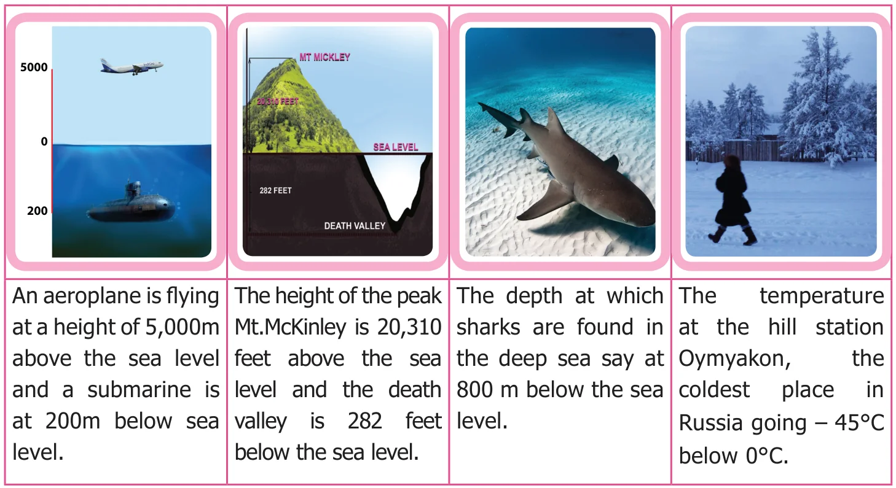
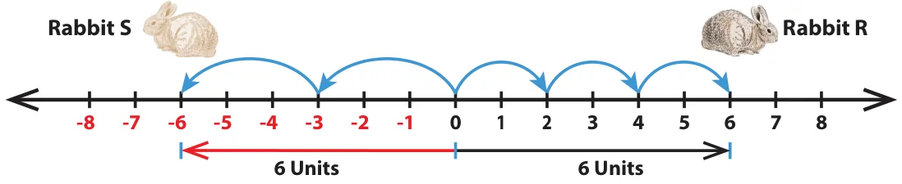
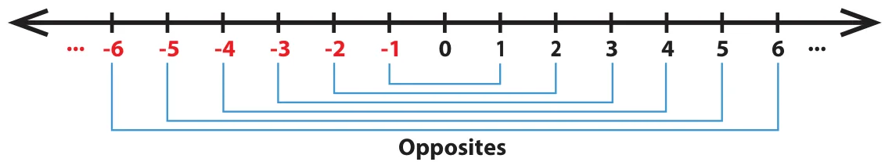
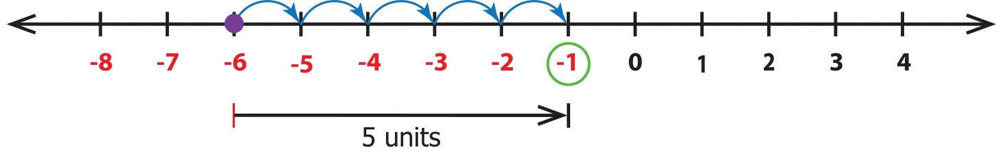
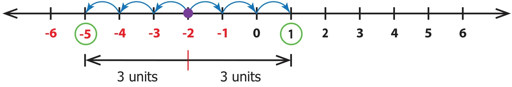

We know that when zero is included to the set of natural numbers then the set of numbers is called as Whole numbers. Now, let us recall the number line which shows the representation of whole numbers.

We have seen the need to extend the number line beyond 0 to its left. We call the numbers \(-1, -2, -3, \ldots\) (to the left of zero) as negative numbers or negative integers and the numbers \(1, 2, 3, \ldots\) (to the right of zero) as positive numbers or positive integers. Hence, the new set of numbers \(\ldots, -3, -2, -1, 0, 1, 2, 3, \ldots\) are called Integers. It is denoted by the letter Z. The Integers are shown in the number line below.

The plus and minus sign before a number tells, on which side the number is placed from zero. \(-\) symbol in front of a number is read as negative or minus. For example, \(-5\) is read as negative 5 or minus 5.
Note
- The number line can be shown both in horizontal and vertical directions.
- The number 0 is neither positive nor negative and hence has no sign.
- Natural numbers are also called as positive integers and Whole numbers are also called as non-negative integers.
- The positive and the negative numbers together are called as Signed numbers. They are also called as Directed numbers.
- A number without a sign is considered as a positive number. For example, 5 is considered as \(+5\).
Do you know?
The letter Z was first used by the Germans, because the word for Integers in the German language is ZAHLEN which means number.
Example 1 Draw a number line and mark the integers \(6, -5, -1, 4\) and \(-7\) on it.
Solution

Try these
- Read the following numbers orally.
- \(+24\)
- \(-13\)
- \(-9\)
- \(8\)
- Draw a number line and mark the following integers.
- \(0\)
- \(-6\)
- \(5\)
- \(-8\)
- Are all natural numbers integers?
- Which part of the integers are not whole numbers?
- How many units should you move to the left of 3 to reach \(-4\)?
2.2.1 More situations on Integers

Activity
Ask your parents / grandparents about the depth at which the various types of vegetables (seeds) should be planted, for their better and efficient growth. For the same, draw a number line indicating the depth of various vegetable seeds. (Draw the planting chart!).
2.2.2 Opposite of a number
The idea of opposite of a number is not a new one. A few situations like, a man makes a profit of ₹ 500 or he loses ₹ 500 by selling an article; credit and debit of ₹ 75000 in a cash transaction of a business are 'opposite' to each other.
Think about the situation
Suppose two rabbits R and S jump along a number line (like) on the opposite sides of 0. Rabbit R jumps 2 steps 3 times to the right of 0 and Rabbit S jumps 3 steps 2 times to the left of 0 as shown in the figure below. Where will both of them stand on the number line? Are they at equal distance from 0?

Clearly, the rabbit R stands at 6 and the rabbit S stands at \(-6\) on the number line. The distance from 0 to 6 on the number line is 6 units and the distance from 0 to \(-6\) on the number line is also 6 units. The numbers 6 and \(-6\) are at the same distance from 0 on the number line. That is, the rabbits R and S stand at the same distance from 0, but in opposite directions.
Here, 6 and \(-6\) are opposite to each other. That is, two numbers that are at the same distance from 0 on the number line, but are on the opposite sides of it, are opposite to each other. For every positive integer, there is a corresponding negative integer and vice versa. The opposite of each integer is shown in the figure.

Note
The opposite of the opposite of a number is the number itself. For example \(-(-5)\) read as negative of negative 5 or minus of minus 5 is equal to 5 itself.
Now, it is easy to write the opposite of the numbers \(12, -7, -225\) and \(6000\). Note that, the opposite of a positive integer is negative, and the opposite of a negative integer is positive, whereas the opposite of zero is zero.
| Number | Its opposite |
|---|---|
| \(12\) or \(+12\) | \(-12\) |
| \(-7\) | \(+7\) or \(-(-7) = 7\) |
| \(-225\) | \(+225\) |
| \(6000\) or \(+6000\) | \(-6000\) |
The "opposites" are naturally more convenient to relate and understand with many of our daily-life situations like saving-spending, height above-below, where
- the saving is treated as positive and the spending is treated as negative.
- the height above the sea level is regarded as positive and the height below the sea level is regarded as negative.
Example 2 Represent the following situations as integers:
- A gain of ₹1000
- \(20^{\circ}\text{C}\) below \(0^{\circ}\text{C}\)
- 1990 BC (BCE)
- A deposit of ₹15847
- 10 kg below normal weight
Solution
- As gain is positive, ₹1000 is denoted as \(+\) ₹1000.
- \(20^{\circ}\text{C}\) below \(0^{\circ}\text{C}\) is denoted as \(-20^{\circ}\text{C}\).
- A year in BC (BCE) can be considered as a negative number and a year in AD (CE) can be considered as a positive number. Hence, 1990 BC (BCE) can be represented as \(-1990\).
- A deposit of ₹15847 is denoted as \(+\) ₹15847.
- 10 kg below normal weight is denoted as \(-10\) kg.
Example 3 Using the number line, write the integer which is 5 more than \(-6\).
Solution
From \(-6\), we can move 5 units to its right to reach \(-1\) as shown in the figure.

Example 4 Find the numbers on the number line that are at a distance of 3 units in the opposite directions to \(-2\).
Solution
From \(-2\), we can move 3 units to the left and right as shown in the figure.

The required numbers are: 1 on the right of \(-2\) and \(-5\) to the left of \(-2\).
Try these
- Find the opposite of the following numbers:
- \(55\)
- \(-300\)
- \(+5080\)
- \(-2500\)
- \(0\)
- Represent the following situations as integers.
- A loss of ₹2000
- 2018 AD (CE)
- Fishes found at 60 m below the sea level
- \(18^{\circ}\text{C}\) below \(0^{\circ}\text{C}\)
- Gaining 13 points
- A jet plane at a height of 2500 m
- Suppose in a building, there are 2 basement floors. If the ground floor is denoted as zero, how can we represent the basement floors?
Do you know?
ISRO Scientists often find it convenient to designate a given time as zero time and then refer to the time before and time after as being negative and positive respectively. This practice is followed in the launching of rockets. If the time to take off is 1 minute, then it is 1 minute before the launch and hence denoted as \(-1\) minute.